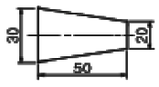
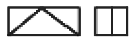
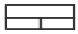
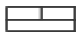
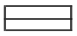
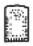
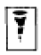
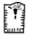
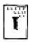

제강기능사 (2005-04-03 기출문제)
1과목: 임의 구분
1. 탄소 2.11 % 의 γ고용체와 탄소 6.68 %의 시멘타이트와의 공정조직으로서 주철에서 나타나는 조직은?
- 펄라이트
- 오스테나이트
- α고용체
- 레데뷰라이트
(정답률: 77%)

2. 재료의 강도를 이론적으로 취급할 때는 응력의 값으로서는 하중을 시편의 실제 단면적으로 나눈 값을 쓰지 않으면 안된다. 이것을 무엇이라 부르는가?
- 진응력
- 공칭응력
- 탄성력
- 하중력
(정답률: 78%)
3. 응고범위가 너무 넓거나 성분 금속 상호간에 비중의 차가 클 때 주조시 생기는 현상은?
- 붕괴
- 기포수축
- 편석
- 결정핵 파괴
(정답률: 87%)
4. 소성가공에 속하지 않는 가공법은?
- 단조
- 인발
- 표면처리
- 압출
(정답률: 90%)
5. 변압기, 발전기, 전동기 등의 철심용으로 사용되는 재료는 무엇인가?
- Fe-Si
- P-Mn
- Cu-N
- Cr-S
(정답률: 93%)
6. 바나듐의 기호로 옳은 것은?
- Mn
- Ni
- Zn
- V
(정답률: 100%)
7. 다음 중 퀴리점이란?
- 동소변태점
- 결정격자가 변하는 점
- 자기변태가 일어나는 온도
- 입방격자가 변하는 점
(정답률: 85%)
8. 고속도강의 성분으로 옳은 것은?
- Cr-Mo-Sn-Zn
- Ni-Cr-Mo-Mn
- C-W-Cr-V
- W-Cr-Ag-Mg
(정답률: 77%)
9. 탄소강의 표준조직에 대한 설명 중 옳지 않은 것은?
- 탄소강에 나타나는 조직의 비율은 C량에 의해 달라진다.
- 탄소강의 표준조직이란 강종에 따라 A3점 또는 Acm보다 30 ∼ 50℃ 높은 온도로 강을 가열하여 오스테나이트 단일 상으로 한 후, 대기 중에서 냉각했을 때 나타나는 조직을 말한다.
- 탄소강은 표준조직에 의해 탄소량을 추정할 수 없다.
- 탄소강의 표준조직은 오스테나이트, 펄라이트, 페라이트 등이다.
(정답률: 90%)
10. 금속간 화합물에 관한 설명 중 옳지 않은 것은?
- 변형이 어렵다.
- 경도가 높고 취약하다.
- 일반적으로 복잡한 결정구조를 갖는다.
- 경도가 높고 전연성이 좋다.
(정답률: 46%)
11. 금속의 결정격자에 속하지 않는 기호는?
- FCC
- LDN
- BCC
- HCP
(정답률: 96%)
12. 청동의 합금원소는?
- Cu-Zn
- Cu-Sn
- Cu-B
- Cu-Pb
(정답률: 74%)
13. 다음 중 불변강의 종류가 아닌 것은?
- 플래티나이트
- 인바
- 엘린바아
- 아공석강
(정답률: 85%)
14. 티타늄탄화물(TiC)과 Ni의 예와 같이 세라믹과 금속을 결합하고 액상소결하여 만들어 절삭공구로 사용하는 고경도 재료는?
- 서멧(cermet)
- 두랄루민(duralumin)
- 고속도강(high speed steel)
- 인바(invar)
(정답률: 71%)
15. 순철의 용융점(℃)은 약 몇℃ 정도인가?
- 768℃
- 1,013℃
- 1,538℃
- 1,780℃
(정답률: 81%)
16. 나사의 간략도시에서 수나사 및 암나사의 산은 어떤 선으로 나타내는가? (단, 나사 산이 눈에 보이는 경우임)
- 가는 파선
- 가는 실선
- 중간 굵기의 실선
- 굵은 실선
(정답률: 55%)
17. 아래와 같은 도형의 테이퍼 값은?

- 1/5
- 1/10
- 2/5
- 3/10
(정답률: 93%)
18. 제3각법에서 평면도는 어느 곳에 위치하는가?
- 정면도의 위
- 좌측면도의 위
- 우측면도의 위
- 정면도의 아래
(정답률: 92%)
19. 도형이 단면임을 표시하기 위하여 가는실선으로 외형선 또는 중심선에 경사지게 일정 간격으로 긋는 선은?
- 특수선
- 해칭선
- 절단선
- 파단선
(정답률: 67%)
20. 제도에 사용하는 다음 선의 종류 중 굵기가 가장 큰 것은?
- 치수보조선
- 피치선
- 파단선
- 외형선
(정답률: 80%)
2과목: 임의 구분
21. 도면의 치수 기입법 설명으로 옳은 것은?
- 치수는 가급적 평면도에 많이 기입한다.
- 치수는 중복되더라도 이해하기 쉽게 여러번 기입한다.
- 치수는 측면도에 많이 기입한다.
- 치수는 가급적 정면도에 기입하되 투상도와 투상도 사이에 기입한다.
(정답률: 75%)
22. 치수 기입시 치수 숫자와 같이 사용하는 기호의 설명으로 잘못된 것은?
- Ø : 지름
- R : 반지름
- C : 구의 지름
- t : 두께
(정답률: 85%)
23. 다음 재료 기호 중 고속도 공구강은?
- SCP
- SKH
- SWS
- SM
(정답률: 92%)
24. 도면의 부품란에 기입되는 사항이 아닌 것은?
- 도면명칭
- 부품번호
- 재질
- 부품수량
(정답률: 60%)
25. 아래와 같은 투상도(정면도 및 우측면도)에 대하여 평면도를 옳게 나타낸 것은?




(정답률: 57%)
26. KS의 부문별 분류 기호 중 틀리게 연결된 것은?
- KS A - 전자
- KS B - 기계
- KS C - 전기
- KS D - 금속
(정답률: 82%)
27. 도면에 기입된 구멍의 치수 製50H7 에서 알 수 없는 것은?
- 끼워맞춤의 종류
- 기준치수
- 구멍의 종류
- IT 공차등급
(정답률: 43%)
28. 제강의 고소(高所) 작업에서 추락의 재해를 방지하기 위한 것은?
- 방진마스크
- 안전벨트
- 면장갑
- 운동화
(정답률: 84%)
29. 세미 킬드강에 대한 설명으로 옳지 않은 것은?
- 주입속도가 늦으면 성장하기 쉬우므로 상주, 하광형의 빠른 주입이 좋다.
- 강괴 실수율이 양호하다.
- 과탈산시 파이프가 커져서 실수율이 낮아진다.
- 약탈산하면 표면흠이 양호하다.
(정답률: 39%)
30. 제강로 내부에 사용되는 내화물의 구비조건으로 옳지 않은 것은?
- 연화점이 높을 것
- 견고하여 큰 힘에 변형되지 않아야 할 것
- 고온에서 열전도 및 전기전도가 클 것
- 슬랙이나 용융금속에 침식되지 않을 것
(정답률: 45%)
31. 단조나 열간 가공한 재료의 파단면에 은회색의 반점이 원형으로 집중되어 나타나는 결함은 주로 강의 어떤 성분 때문인가?
- 수소
- 질소
- 산소
- 이산화탄소
(정답률: 77%)
32. RH탈가스법에서 일어나는 주요 반응으로 옳지 않은 것은?
- 탈규소반응
- 탈탄반응
- 탈질소반응
- 탈수소반응
(정답률: 39%)
33. 고철을 주원료로 하여 고급강생산에 적합한 것으로 생산비 중이 점차 커지고 있는 제강법은?
- 염기성 전로법
- 산성 전로법
- 전기로법
- 평로법
(정답률: 86%)
34. 산소 전로 제강에서 사용되는 매용제로 가장 적합한 부원료는?
- 흑연, 돌로마이트
- 연와설, 고철
- 마그네시아, 강철
- 형석, 밀 스케일
(정답률: 86%)
35. 분진에 의한 재해 방지법으로 옳지 않은 것은?
- 건식작업 방법을 택한다.
- 방진 마스크를 착용한다.
- 집진시설이나 배기시설을 한다.
- 원료를 분진이 발생하지 않는 것으로 바꾼다.
(정답률: 73%)
36. 복합 취련 조업법의 설명으로 옳지 않은 것은?
- 기존 상취전로를 개조하여 사용 할수 있다.
- 소량의 저취가스로 강욕의 온도 성분의 균일화가 가능하다.
- 저취풍구 수명에 한계가 있다.
- 상취전로보다 조업이 단순하고 안정하다.
(정답률: 53%)
37. 캐치 카아본(Catch Carbon)법의 이점으로 옳지 않은 것은?
- 취련시간 단축
- 산소 사용량의 감소
- 강중의 산소의 감소
- 탈인이 잘 됨
(정답률: 56%)
38. 전로제강작업시 중요 4대작업 방법 중 옳게 나열된 것은?
- 장입 → 취련 → 출강 → 배재
- 출강 → 취련 → 측온 → 장입
- 취련 → 측온 → 출강 → 배재
- 측온 → 취련 → 출강 → 장입
(정답률: 87%)
39. 혼선차(Torpedo car)의 장점으로 옳지 않은 것은?
- 온도강하가 적고 철 손실이 적다.
- 작업인원이 적게 들며 레들크레인을 감소 시킨다.
- 레들을 포함한 혼선로의 건설비가 싸다.
- 출선구가 커서 Slag가 전혀 유출되지 않는다.
(정답률: 67%)
40. 전기로 제강법의 장점으로 옳지 않은 것은?
- 열효율 좋다.
- 용탕의 성분 조절이 쉽다.
- 불순물 혼입이 많다.
- 주조용 금속의 용해손실이 적다.
(정답률: 69%)
3과목: 임의 구분
41. 연속 주조법이 강괴 - 분괴법에 비하여 유리한 점을 설명 한 것으로 옳지 않은 것은?
- 제품 사이즈(size)의 다양화를 기할 수 있다.
- 실수율이 향상된다.
- 에너지 절감을 기할 수 있다.
- 제조 원가가 절감된다.
(정답률: 64%)
42. 재해사고 조사의 주된 목적은?
- 비슷한 재해의 재발 방지를 위하여
- 산재 통계 작성을 위하여
- 안전사고를 알리기 위하여
- 품질관리 계획을 수립하기 위하여
(정답률: 91%)
43. 다음 중 전로의 용량은?
- 1회 배합량
- 1회 출강량
- 1시간 용해량
- 1일 생산량
(정답률: 77%)
44. 턴디시의 역할로 옳지 않은 것은?
- 주형에 들어가는 용강의 성분조정
- 주형에 들어가는 용강의 양 조절
- 용강중의 비금속개재물 부상
- 각 스트랜드에 용강을 분배
(정답률: 47%)
45. 연속주조 작업중 Tundish로부터 주형에 주입되는 용강의 재산화, Splash방지 등을 위하여 Tundish로부터 주형내 잠기는 내화물은?
- Shroud Nozzle
- 침지 Nozzle
- Long Nozzle
- Top Nozzle
(정답률: 62%)
46. 부두아 반응(Boudouard reaction)에 대한 설명으로 옳지 않은 것은?
- Solution loss반응은 고온,저압이 유리하다.
- Solution loss반응은 엔트로피가 감소하는 반응이다.
- 카본 석출반응은 저온,고압이 유리하다.
- 2CO=CO2+C 이다.
(정답률: 48%)
47. 전극의 구비조건으로 옳지 않은 것은?
- 고온에서 산화가 잘 안될 것
- 과부하에 잘 견딜 것
- 전기 전도율이 적을 것
- 불순물이 적을 것
(정답률: 71%)
48. 제강 원료 중 부원료에 속하지 않는 것은?
- 석회석
- 생석회
- 형석
- 고철
(정답률: 85%)
49. 상주법으로 주입시 용강의 비산에 의해 강괴 하부에 생기는 이중 표피(double skin)의 원인 및 방지법으로 옳지 않은 것은?
- 상주초기에 용강의 splash(비말)에 의한 각의 형성 및 강괴하부에 생긴다.
- Splash can을 사용한다.
- 주형내부에 도료를 바른다.
- 볼록정반을 사용한다.
(정답률: 49%)
50. 연속주조 작업 중 몰드에 투입하는 파우더의 역할이 아닌 것은?
- 산화방지
- 윤활제 역활
- 주편냉각 촉진
- 강의 청정도향상
(정답률: 70%)
51. 취련 개시 수분내에 산소제트에 의해 미세한 철입자가 노구로부터 비산하는 현상은?
- 포밍
- 블로킹
- 스피팅
- 행깅 드롭
(정답률: 79%)
52. 레들에 들어있는 용강을 윗부분의 진공탱크로 흡인하는 것을 반복하여 탈가스하는 것은?
- 유적 탈가스법
- 순환 탈가스법
- 흡인 탈가스법
- 레들 탈가스법
(정답률: 75%)
53. 오지(OG)설비 중 가스누기가 되어 점검하고자 할 때 필요 한 안전보호구는?
- 면 마스크
- 방진 마스크
- 송풍 마스크
- 방독 마스크
(정답률: 81%)
54. 전로에서 분제취입법(POWDER INJECTION)의 목적으로 옳지 않은 것은?
- 용강 중 탈황[S]
- 개재물 저감
- 용강중에 남아 있는 불순물의 구상화하는 고급강 제조에 용이함
- 용선 중 탈인[P]
(정답률: 62%)
55. 공장의 전기 배선함에서 작은 화재가 발생하였을 때 가장 올바른 최우선 소화방법은?
- 소화전의 물로 소화
- 스프링 쿨러를 작동시켜 소화
- CO2 소화기로 소화
- 119로 신고하여 소화
(정답률: 83%)
56. 탈산도에 따른 강괴의 단면 조직을 표시한 것 중 림드강괴의 형상은?




(정답률: 31%)
57. LD 전로의 OG 설비에서 IDF(induced draft fan)의 기능을 가장 적절히 설명한 것은?
- 취련시 외부공기의 노내침투를 방지하는 설비
- 후드(Hood)내의 압력을 조절하는 장치
- 취련시 발생되는 폐가스를 흡인, 승압하는 장치
- 연도내의 CO 가스를 불활성가스로 희석시키는 장치
(정답률: 30%)
58. L.D 전로 제강법에 사용되는 랜스노즐의 재질은?
- 내열 합금강
- 구리
- 니켈
- 스테인리스강
(정답률: 67%)
59. 응고하는 동안 기체의 발생이 가장 적은 강괴는?
- 킬드강
- 세미킬드강
- 림드강
- 캐프트강
(정답률: 73%)
60. 전기로의 정련시 산화기의 가장 큰 목적은?
- 탈인
- 보온
- 배제
- 냉각
(정답률: 76%)